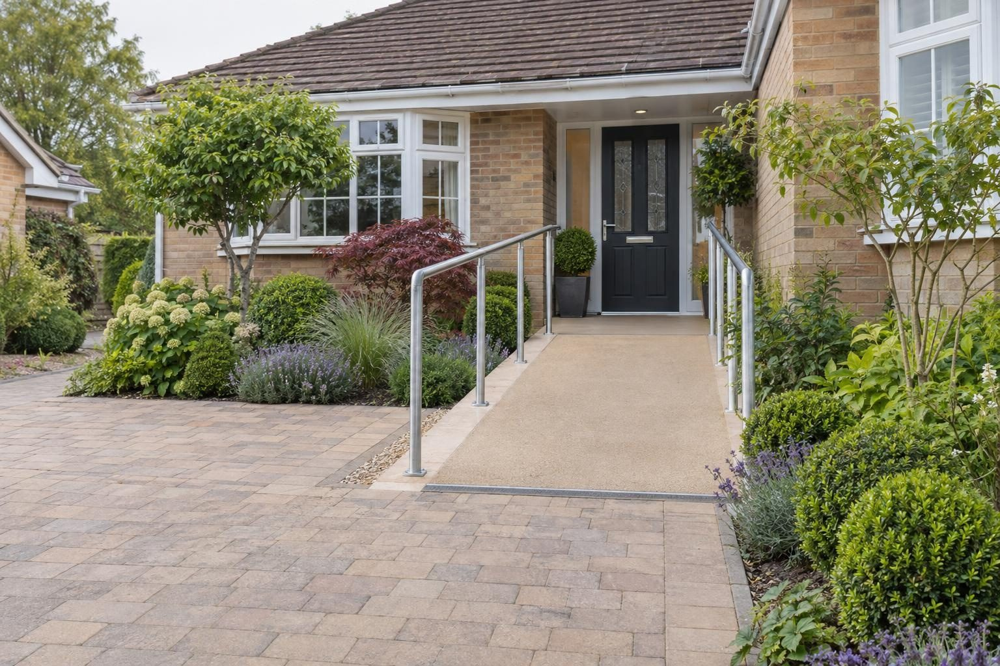

Accessible paths & ramps in Market Harborough
Concrete access ramps and wider paths for Market Harborough homes, with the drainage planned around a town that has flooded from surface water.
A permanent concrete ramp with handrails and a non-slip surface in Market Harborough typically costs up to about £2,500 as a guide; longer ramps, landings and widened paths are priced on the visit. The main local concern is water. The town centre flooded from surface water in September 2024, so where a ramp sends its run-off matters as much as its gradient.
- Ramp with handrails
- Up to about £2,500
- Planning
- Not normally needed
- Ground
- Lias mudstone and clay; slow to drain
- Guarantee
- 5 years, in writing
Our 2026 guide prices. Your fixed price comes in writing after the site visit. Full breakdown: accessible paths & ramps cost guide.
Accessible paths & ramps in Market Harborough
A ramp replaces a step, and that step has often been doing a quiet job: keeping rainwater out of the house. In Market Harborough that matters, because the town centre flooded from surface water in September 2024 when a high River Welland stopped the drains discharging, and more than 50 properties flooded in July 2013. When we build an access ramp or level landing here, we work out where the water goes before we work out anything else.
We build permanent concrete and paved ramps, level landings and widened paths for wheelchairs, walkers and pushchairs across the town and out to Little Bowden, Great Bowden, Lubenham and Foxton. Homes range from the historic core around the Square to Victorian and Edwardian streets and the large Airfield Farm development near Lubenham, and each has a different relationship between pavement, path and door. Grant-funded adaptations are built to the occupational therapist's recommendations and priced to the council's schedule.
What makes Market Harborough different
Market Harborough is on Jurassic mudstones and clays, which drain slowly, and it sits where the River Welland meets the River Jordan. A ramp adds a sloping hard surface right at the door, so on this ground we test before deciding whether a soakaway will work or whether a permeable build-up or channel to a proper outlet is needed. The level landing at the threshold is laid to fall away from the house so a heavy downpour does not find a new route inside.
On a typical Victorian or Edwardian terrace towards Little Bowden, a ramp runs from the pavement or a short front garden to a door a step or two up, with a landing and handrail. On later estates and at Airfield Farm, it more often runs beside the drive, sometimes with the path widened at the same time.
Sources: Market Harborough flood report, Sept 2024 · Market Harborough conservation area.
Permissions in Market Harborough
- PlanningA ramp or path in the garden does not normally need planning permission, but a raised ramp or platform more than 30cm high can. We build to the gradients and landings in Approved Document M, and Disabled Facilities Grant work follows the occupational therapist's recommendations. Listed buildings and the Market Harborough conservation area have tighter rules, so we check your address before anything is designed.
- Disabled Facilities GrantGrants are run by Harborough District Council. You apply to the council, an occupational therapist assesses what is needed, and the grant can cover up to £30,000 in England. We price to the council's schedule and work to the OT's report.
- Design and priceWe measure up, check the ground and the planning position, and give you one fixed written price.
Rules checked October 2026.
What you get in Market Harborough
- Run-off routed away from the threshold on slow-draining clay
- Ground tested before any soakaway is chosen
- Queen's Street Article 4 checked where gates, fences or walls change
- Working out to Great Bowden, Lubenham, Foxton and Kibworth
- Gentle gradients with level landings at the top and bottom
- Handrails on both sides where they are needed
- Non-slip surfaces that drain properly
The specification
- Survey with the occupational therapist's report if there is one
- Ramp and landings set out to the right gradient
- Sub-base and concrete or paved surface
- Handrails fixed and checked
- Drainage so water does not pool on the ramp
- Five year workmanship guarantee in writing

Rated 5.0 from 37 Google reviews
“I needed a base for my hot tub to sit on. Lewis and His team built the base and and footpath to it. They turned up when they said they would and worked all day until it was completed. They done a great job and even went the extra mile and moved the tub for me ( Not an easy task) ! …”
Andy · Hot tub base and footpath — Google review
“Well what can I say about Rutland driveways that would make you seriously consider using them for your project I contacted them had a meeting with the team who was very informative with the level of inspiration I had ideas they had ideas and recommendations we bounced ideas to come up with the best option possible for my …”
Steven · Drive, walkway, patio and garden — Google review
Everything else we do here


Accessible paths & ramps in Market Harborough: questions
What will a ramp cost in Market Harborough?
Will I need planning permission for a ramp in Market Harborough?
Does removing my front step increase flood risk?
Can a ramp be built on an Airfield Farm new-build?
Accessible paths & ramps nearby
Request a site visit in Market Harborough
We measure up, check levels and drainage, and send a written proposal with the build-up, the programme and one whole price. No pressure and no follow-up sales calls.